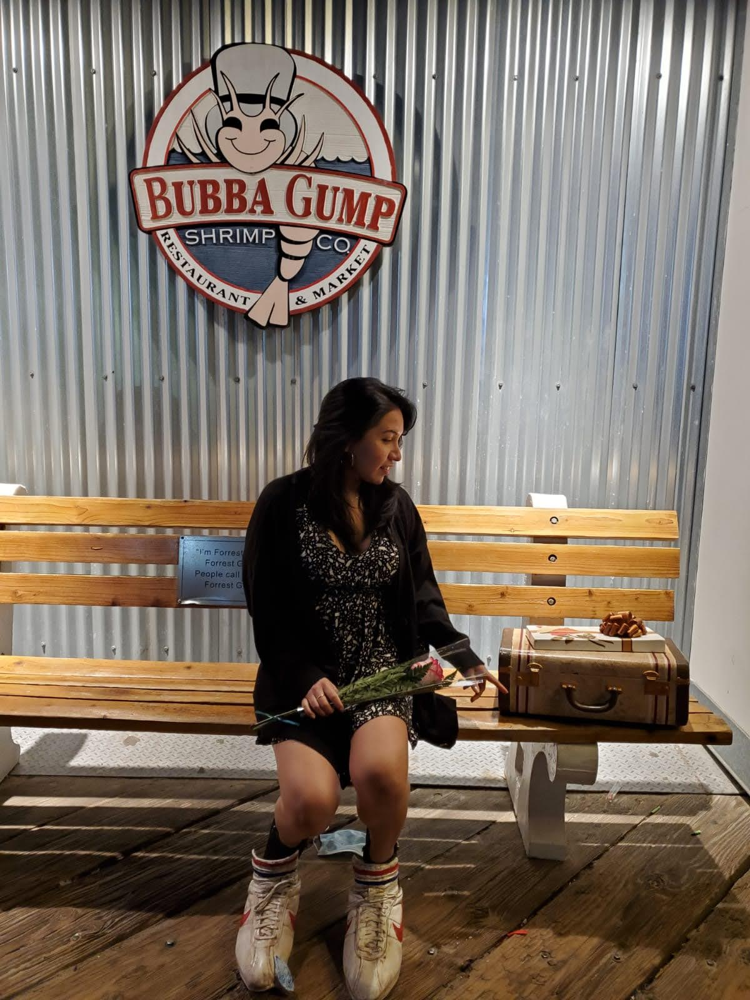

Hola! actualmente soy estudiante de Code Notch, estoy aprendiendo programación.

Yo en mi último viaje de negocios.
Formación Académica:
- Administración y Dirección de empresas
- Técnico Superior en Administración y Finanzas
Experiencia laboral:
- Consultoría financiera: Controller
- Auditoria: Auditoria y admin.